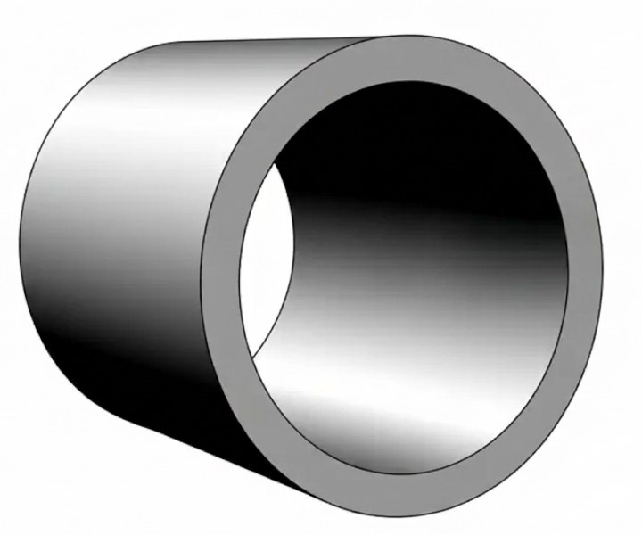

Projeto Fase Sigma · Resultados
Metalurgia dos aços inoxidáveis superduplex: efeito das fases deletérias nas propriedades do material
Precipitação controlada de fase σ no UNS S32750 (SAF 2507) e seu efeito sobre a microestrutura, a tenacidade (Charpy e CTOD) e a resistência mecânica.
Ver sumário →- Coordenação
- Prof. Hélio Cordeiro de Miranda
- SIGITEC
- 2026/00283-2
- Data
- Novembro de 2026


Roteiro
Sumário
Da simulação à tenacidade à fratura: precipitação controlada de fase σ em três níveis no superduplex UNS S32750.
-
01

Simulação→
Simulação termodinâmica (JMatPro, Thermo-Calc) da precipitação na faixa crítica.
-
02

Caracterização microestrutural→
Material como recebido e amostras do Kit 1 com 2, 4 e 6% de σ.
-
03

Charpy→
Energia absorvida a +20, −20 e −50 °C, fractografia MEV e quantificação de fases.
-
04
Ensaio de tração→
Resistência mecânica e ductilidade em função do teor de fase σ.
-
05

CTOD→
Tenacidade à fratura (ISO 12135): curvas força × CMOD, resultados, comparação e fractografia.
-
06

Gleeble→
Simulação termomecânica e dilatometria para o diagrama TRC.
-
07
Relatórios→
Relatórios técnicos e gerenciais do projeto Fase Sigma.
Simulação
Simulação termodinâmica (JMatPro, Thermo-Calc) da precipitação na faixa crítica.
Caracterização microestrutural
Microestrutura do superduplex antes e depois da precipitação controlada de fase σ.
02 · Caracterização microestrutural
Kit 1 · Quantificação de fase σ
| Condição | Microscopia óptica (MO) | MEV · BSE | Ferritoscópio · % ferrita | Micrografia | ||
|---|---|---|---|---|---|---|
| Média (%) | Desv. Pad. | Média (%) | Desv. Pad. | Média (%) | ||
Clique numa condição para ver as micrografias de MO e MEV com as respectivas quantificações.
02 · Caracterização microestrutural
Como Recebido
Microestrutura de referência do UNS S32750 antes do tratamento térmico, com bandas de ferrita e austenita alongadas no sentido longitudinal.

Longitudinal Circunferencial03 · Charpy
Transição dúctil-frágil
03 · Charpy
Controle dos corpos de prova
04 · Ensaio de tração
Curvas tensão × deformação
04 · Ensaio de tração
Comparação de propriedades
04 · Ensaio de tração
Corpos de prova e propriedades
Valores calculados a partir dos arquivos brutos da MTS; abaixo, em cinza, o valor do relatório MTS (laranja quando diverge mais de 3 %). Ag só é estimado com o comprimento útil Lc.
05 · CTOD · Crack Tip Opening Displacement
Tenacidade à fratura — CTOD
05 · Tenacidade à fratura — CTOD
Curvas experimentais
05 · Tenacidade à fratura — CTOD
Resultados individuais
05 · Tenacidade à fratura — CTOD
Comparação entre condições
05 · Tenacidade à fratura — CTOD
Análise fractográfica
Gleeble
Simulação termomecânica e dilatometria para o diagrama TRC.
Relatórios
Relatórios técnicos e gerenciais do projeto Fase Sigma.